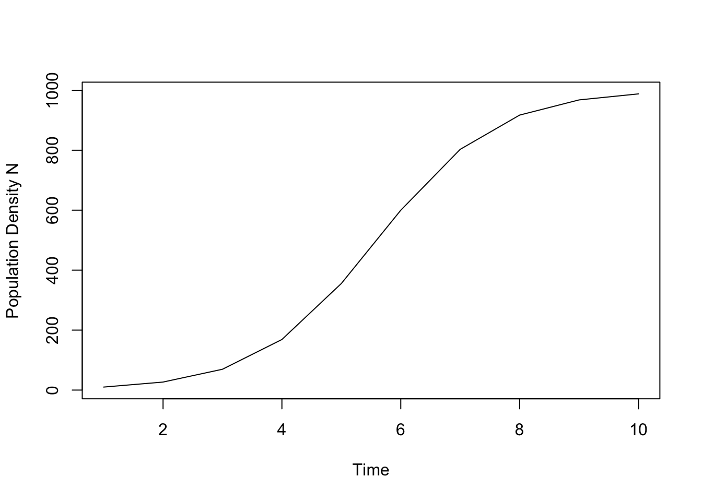
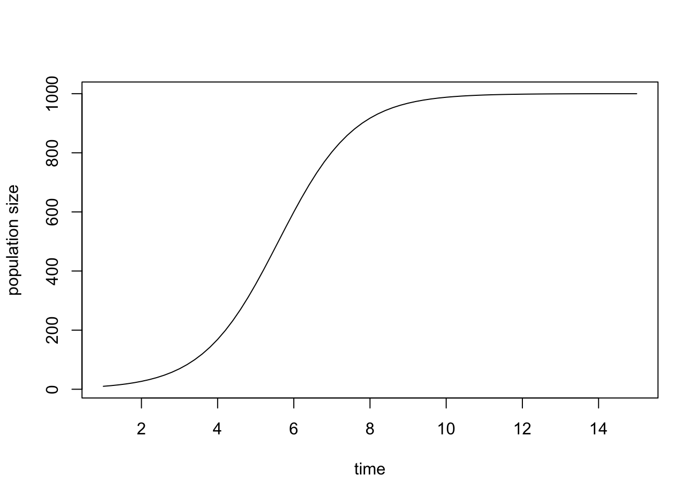
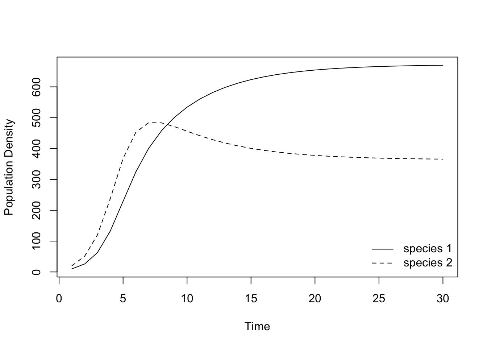
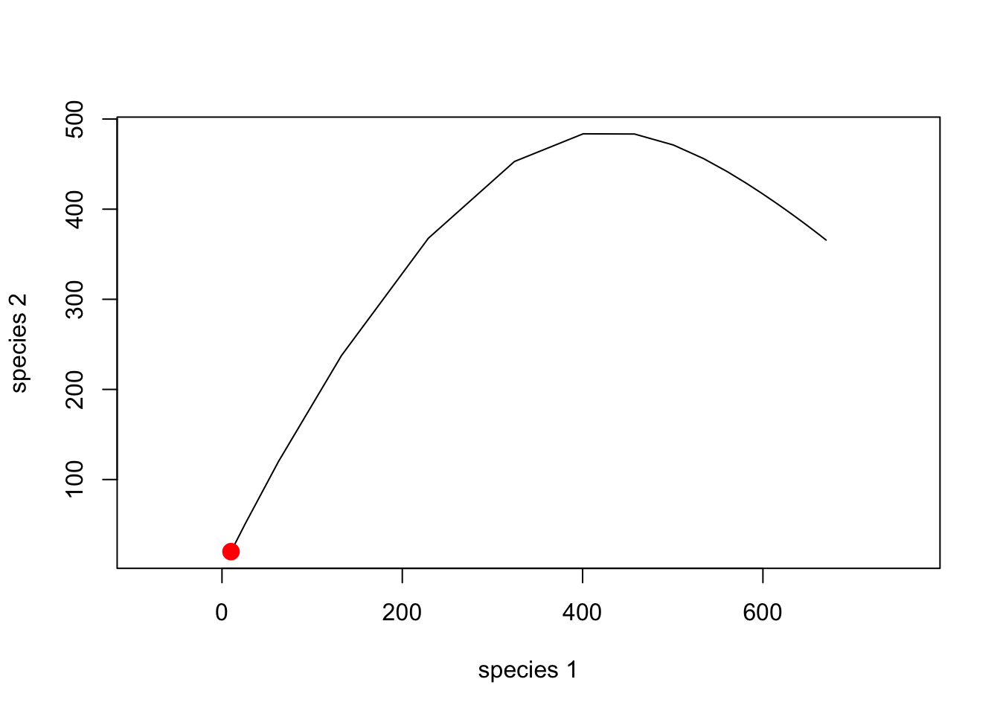

In order to study continuous population dynamics, we often would like to integrate complex nonlinear functions of population dynamics. To do this, we need to use numerical techniques that turn the infinitely small steps of calculus, \(\mathrm{d}x\), into very small, but finite steps, in order to approximate the change in \(x\), given the change in \(x\), or \(\mathrm{d}x/\mathrm{d}y\). Mathematicians and computer scientists have devised very clever ways of doing this very accurately and precisely. In R, a good (the best?) package for this is deSolve, which contains several solvers for differential equations that perform numerical integration. We will access these solvers (i.e. numerical integraters) using the function ode() in the deSolve package.
install.packages("deSolve")library(deSolve)When we have an ordinary differential equation (ODE) such as logistic growth, we say that we “solve” the equation for a particular time interval given a set of parameters and initial conditions or initial population size. For instance, we say that we solve the logistic growth model
\[ \frac{\mathrm{d}N}{\mathrm{d}t}=N r \left(1 - \frac{N}{K} \right) \]
for time at t = 0, 1… 20, with parameters r = 1, K = 1000, and N0 = 10, where r denotes the intrinsic growth rate and where the equilibrium population size is given by K, often called the carrying capacity. Let us now define the function for logistic growth in a particular way and specify its parameters.
log_growth <- function(t, N, parameters) {
with(as.list(c(N, parameters)), {
dN.dt <- r * N * (1 - N /K)
return(list(dN.dt))
})
}
parameters <- c(r = 1, K = 1000)
N <- 10 # initial population size
t <- 1:10 # vector of time pointsNote that we here stored the parameters and intial conditions in a named vector, which allows us to call their entries by their name. The R-statement with with(as.list(c(state, parameters)), { } ensures that the state variables and parameters can be addressed by their names.
Now you put it all into the deSolve-function ode(y, times, func, parms, ...), with the correct arguments. The output is a data frame, with the first column being the time steps, and the remaining being your state variables.
int_time_series <- ode(y = N, times = t, func = log_growth, parms = parameters)
int_time_series## time 1
## 1 1 10.00000
## 2 2 26.72369
## 3 3 69.45310
## 4 4 168.66426
## 5 5 355.46079
## 6 6 599.85982
## 7 7 802.95598
## 8 8 917.19889
## 9 9 967.85733
## 10 10 987.93011plot(t, int_time_series[, 2], type = "l", lty = 1:2, col=1, ylab = "Population Density N", xlab="Time")
This graph shows the solution of the ODE describing logistic growth. We can make two obervations. First, it seems that the dynamics might not have reached its equilibrium. We therefore might want run the model a bit longer, in other words, to increase the length of the time as specified in t. Second, the graph of the time series does not look smooth but rather a bit chunky. This is the result of computing the change of the dynamics only at each full time step. In order to get a smoother curve we can add time points between the full time steps.
t <- seq(1, 15, 0.2)
int_time_series <- ode(y = N, times = t, func = log_growth, parms = parameters)
plot(t, int_time_series[, 2], type = "l", lty = 1:2, col=1, ylab = "population size", xlab="time") With these changes the time series is long enough for the dynamics to equilibriate and it curve indeed looks smooth as it should be.
For the logistic model it is in fact possible to compute the solution analytically,
\[ N(t) = \frac{N_0 \exp(r t)}{1 + \frac{N_0}{K}(\exp(r t) - 1)} \]
which we can define as a R-function and plot
solution_logistic <- function(t) { (N0 * exp(r * t)) /
(1 + (N0 / K) * (exp(r * t) - 1))
}
r <- 1
K <- 1000
N0 <- 10
curve(solution_logistic(x), from = 0, to = 15, xlab = "time", ylab = "population size N")This graph is virtually indistinguishable from the one based on numerical integration.
In the lecture, you got to know the Lotka-Volterra competition model, which can be written as
\[ \frac{\mathrm{d}N_1}{\mathrm{d}t} = N_1 r_1 \left(1 − \frac{N_1 + \alpha N_2}{K_1}\right)\\ \frac{\mathrm{d}N_2}{\mathrm{d}t} = N_2 r_2 \left(1 − \frac{N_2 + \beta N_1}{K_2}\right) \]
Before we can apply the function ode() we feed this model into R using the following function:
LV_comp <- function(t, N, parameters) {
with(as.list(c(N, parameters)), {
dN1.dt <- r[1] * N[1] * (1 - (N[1] + a[1] * N[2]) / K[1])
dN2.dt <- r[2] * N[2] * (1 - (N[2] + a[2] * N[1]) / K[2])
return(list(c(dN1.dt, dN2.dt)))
})
} Note that LV_comp assumes that N, r, a and K are vectors. For instance, the function extracts the the first element of r for the first species (r[1]). The vector N of population sizes contains one value for each population at one time point. Thus here, the vector contains only two entries (one for each of the two species). It holds only these values, but will do so repeatedly, at each time point. Only the output will contain all of the population sizxes through time.
To integrate these populations, we need to specify new initial conditions, and new parameters for the two-species model.
r <- c(r1 = 1, r2 = 1)
a <- c(alpha = 0.9, beta = 0.5)
K <- c(K1 = 1000, K2 = 700)
parameters <- list(r, a, K)
N <- c(N1 = 10, N2 = 20)
t <- seq(1, 30, 1) # densities will be computed for 20 time steps; vary this vector to change the length of the time series or the smoothness of the graph
LV_time_series <- ode(y = N, times = t, func = LV_comp, parms = parameters)
LV_time_series[1:5, ] # shows the two densities for the first five time steps## time N1 N2
## [1,] 1 10.0000 20.00000
## [2,] 2 25.9400 51.21843
## [3,] 3 62.8157 120.22174
## [4,] 4 132.6181 237.68058
## [5,] 5 229.0203 367.84078matplot(t, (LV_time_series[, 2:3]), type = "l", lty = 1:2, col=1, ylab = "Population Density", xlab="Time")
legend("bottomright", c(expression("species 1"), expression("species 2")), lty = 1:2, bty = "n")
As expected, for the above parameter values the two competing species can coexist with each other.
Instead of looking at these simulations as time series, we can also look at them in a phase-plane diagram.
plot(LV_time_series[, 2], LV_time_series[, 3], type = "l", lty = 1, xlab = "species 1", ylab = "species 2", asp = 1)
points(N[1], N[2], cex = 1.5, pch = 19, col = "red") # adds a dot to show the starting density